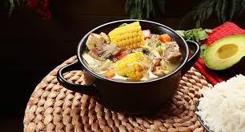

Home
Sancocho

Descripción
El sancocho es un guiso tradicional de las cocinas latinoamericanas y caribeñas. Se prepara con carne, tubérculos y raíces, y se caracteriza por ser un estofado caldoso.
Ingredientes
- 1 Kg costilla de ternera o tira de asado
- 3 Plátanos Verdes “viches” es decir bien verdes (es un nombre coloquial con el que se refiere al estado del plátano)
- 1 kg yuca troceada y deshilachada
- 1 libra de yuca pelada y cortada en 6 trozos
- 1 kg papas peladas y partidas en trozos grandes (normalmente por la mitad)
- 3 mazorcas de maíz tierno partidas en trozos medianos
- 2 cebollas cabezonas peladas
- 4 Tallos cebolla larga peladas
- 2 Tallo cebolla larga picada
- 2 manojos cilantro cimarrón
- 2 tomates verdes
- 2 cubitos de caldo
- Sal y aliños al gusto
Pasos
- Picar las cebollas largas, los tomates verdes. Las cebollas cabezonas las debes machacar y poner todo esto junto, en una olla que esté acorde con la cantidad de ingredientes y la cantidad de agua, a hervir, además de poner al mismo tiempo en la olla la cebolla larga entera (incluso con un ramo de cilantro)y la cola de res. Después de poner todo debes tapar la olla y llevarla a fuego alto por aproximadamente una hora.
- Se baja la temperatura de cocción a fuego medio, debes tapar la olla nuevamente y dejar cocinar por 30 minutos más.
- Luego de este tiempo puedes sacar cebolla entera y el cilantro y agregar el plátano y la papa, dejando que se cocine unos 10 minutos aproximadamente junto con la sal, la pimienta, el comino, el color.
- Añadir la Yuca y rallar un par de papas para dar espesor, dejar cocer por 10 minutos más, luego del cual bajarás a fuego muy lento y dejar por 10 minutos más al cabo del cual el sancocho queda listo para servir, añadiéndole a cada plato cilantro finamente picado para sazonar y adornar.
- Este plato colombiano suele acompañarse con arroz blanco, ensalada o aguacate y para los amantes del picante algún ají que puede ser preparado en casa. Ya, en este punto estarás disfrutando de un tradicional sancocho uno de los platos más sabrosos y ricos de la cocina colombiana y que además es muy fácil de preparar, por lo que puedes sorprender alguna vez a tus invitados con esta deliciosa receta de la gastronomía latina.